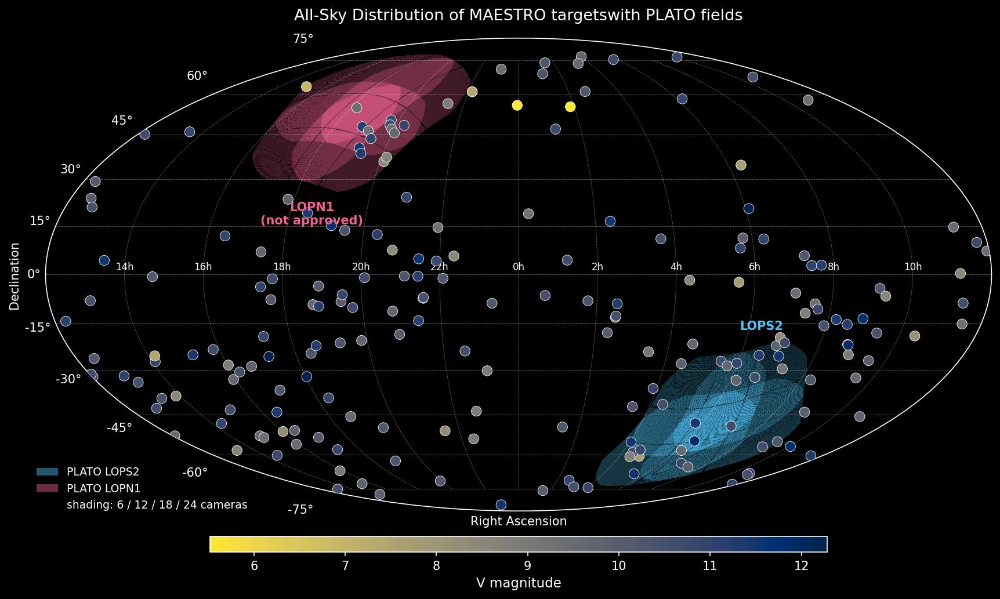
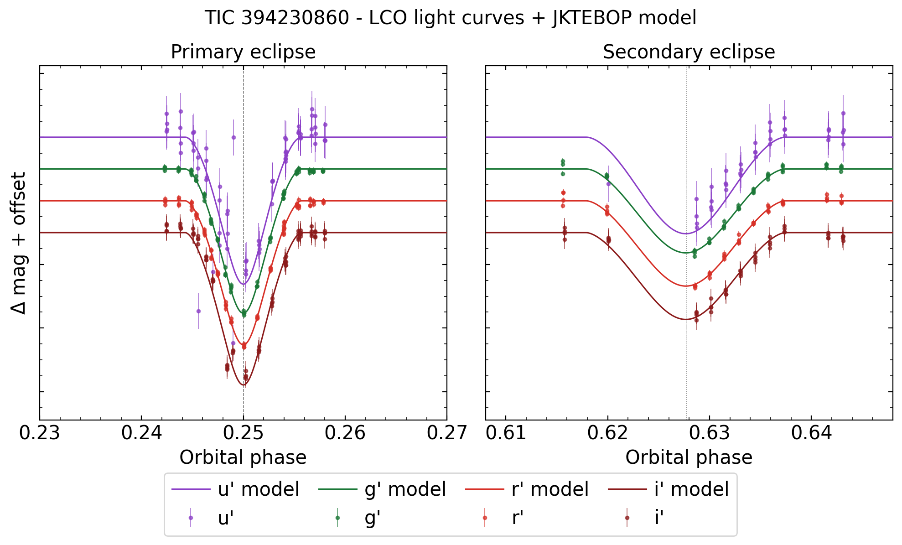
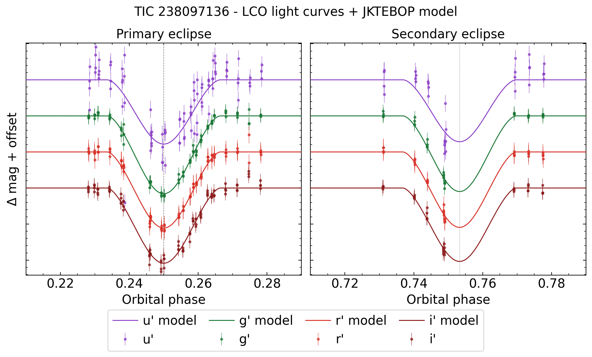

MAESTRO
Multi-band Analysis of Eclipsing Stars: Temperatures, Radii and Orbits
Overview
MAESTRO is a current LCO Key Project: a three-semester photometric survey with the Las Cumbres Observatory (LCO) global network of 0.4-m telescopes. It observes eclipses of about 100 well-detached, double-lined eclipsing binaries (DEBs) at the same time in four Sloan bands (u′, g′, r′, i′). I am the PI, with 549 hours awarded for Cycle 2026B–2027B.
The masses and radii of DEB components can be measured to better than 0.5% from the orbits alone, without relying on stellar models. The missing piece for most systems is a precise, independent effective temperature. The multi-band eclipse light curves from MAESTRO give the flux ratio of the two stars in each band. Combined with Gaia, 2MASS, SDSS and WISE photometry and Gaia parallaxes, these ratios give each star's temperature to better than 1% (following Miller et al. 2020, 2022).
Science goals
- Fundamental temperatures. Get Teff for each component from the band-by-band flux ratios measured during eclipse, independently of spectroscopy. This completes the mass, radius and Teff set needed for a benchmark star.
- Benchmark stars for photometric and spectroscopic surveys. Provide calibration anchors for surveys such as PLATO, Gaia-ESO, GALAH and 4MOST, and test stellar evolution models (convective overshooting, radius inflation in low-mass stars).
The targets come from the spectroscopic campaign CRÉME (Comprehensive Research with Échelles on the Most Interesting Eclipsing binaries), and almost all of them have several sectors of TESS data.

Sample LCO light curves
Eclipses observed with the LCO 0.4-m network in u′, g′, r′ and i′, with JKTEBOP models overplotted. The bands are offset vertically for clarity. The eclipse depth changes from band to band, and this change carries the temperature information. More details are in Pawar et al. (2026), Stability of Light-Curve Solutions of Detached Eclipsing Binaries for Benchmark Candidates in PLATO's LOPS2 Field (Cool Stars 23 proceedings).


Acknowledgement: This work makes use of observations from the Las Cumbres Observatory global telescope network, obtained under programmes LCO2025A-021 and LCO2025B-016.